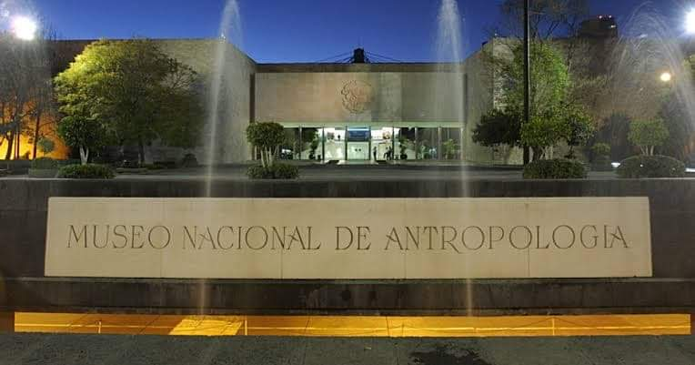

Cultura Estudiantil Centros Culturales y virtuales
Centros Culturales y virtuales
La pandemia ha obligado a las instituciones
culturales a cerrar las puertas, afortunadamente
en el siglo XXI se han innovado las tecnologías
y ahora se puedenobservar virtualmente. Estos son
algunos de los museos en los que se pueden visitar en línea.
Museo Morelense de Arte Contemporaneo
Ubicado en la ciudad de Cuernavaca,
busca contribuir al conocimiento y disfrute del arte contemporaneo y moderno.
El EMMAC Juan Soriano ha diseñado un programa de cuatro a seis
exposiciones temporales al año que, a través de lecturas originales
e inéditas, acerquen al piblico distintos lenguajes artísticos.
Museo de Antropologia

El museo nacional de Antropologia
e historia preseenta un recorrido virtual
de 360º por 180º, en esta ocacion se podrá observar el
vestíbulo, el paraguas y sala maya de uno de los cinco recintos
museisticos nacionales que tiene bajo su resguardo el INAH.
Nuevas formas de ver la actuacion
Continuan las transmisiones del teatro de la paz
en tiempos de pandemia.
La secretaria de cultura de San Luis Potosí, ivita
al publico en general a disfrutar de las transmisiones que el tatro
de la paz hace urante este periodo de contingencia sanitaria promoviendo el
#QuedateEnCasa.
Facebook Teatrode la Paz